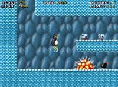

Milestone 1 Goals
The goal of Milestone 1 (also known as 0.1.0), is to produce a useable and fully playable game with the current MarioBros1-style SuperTux engine. The timeframe for the development should be one or two month. The goal is not to create a groundbreaking jump'n run with Milestone1, but simply to produce something of reasonably quality with the current engine. Later Milestones might improve on the work done in Milestone1, but for the moment we should focus on stuff that is doable in one month and not speculate all that much about the future.
- fix up the current engine back into a usable state, ie. MarioBros1 like, no back-scrolling or other funky stuff that could get too complicated, keep especially care of a sane jump behaviour, which can easily go wrong
- extent the engine with whatever features are requested by the level designers (moving platforms, more enemy types)
- create around 15 levels of variing difficulty and arange them to a completly playable game with a nice raising difficulty. More levels are welcome, but shouldn't be a requirement for the release. Qualitity should be more important then pure quanitity, so levels that don't hold up with the rest should be stripped out.
- extent the tilesets to look better, add more varity
- create animated sprites for Tux, SuperTux, FireTux
- create sprites for enemies (MrBomb, MrIceBlock, etc.)
- add music and sound effects to the game
- create a webpage for the game itself (ie. not this development webpage)
- create a little credits-screen/extro or something like that
Since there is are already people working on the tileset, leveleditor and engine, there is especially a need for level designers and gameplay testers and of course artists for the music and sound. If somebody is good at drawing animated sprites he is also very welcome. Since the goal for Milestone1 should be just to create a playable game with the current engine without extenting it all that much, it should be possible to reach the goal within one month.
There hasn't been a final decision on the look of SuperTux, but unless somebody comes up with something better, the image below shows the look that the game will have. The final game will of course differ in details, this is just a mookup in Gimp.
{kind=link}